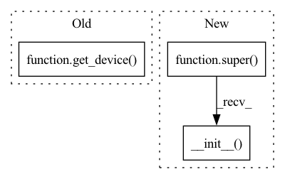

Pattern ID :6542

Before Change
self.buffer_size = buffer_size
self.n_envs = n_envs
self.infinite_horizon = infinite_horizon
self.device = get_device(device)
self.full = False
self.pos = 0
obs_shape = get_space_shape(observation_space)
After Change
infinite_horizon: bool = False,
device: Union[str, T.device] = "auto",
) -> None:
super().__init__(
buffer_size,
observation_space,
action_space,
n_envs,
infinite_horizon,
device,
)
def sample(
self, batch_size: int, dtype: Union[str, TrajectoryType] = "numpy"
) -> Trajectories:
In pattern: SUPERPATTERN
Frequency: 3
Non-data size: 3
Instances
Fragment ID: 22605515
Project Name: londonnode/pearl
Commit Name: 781d3ab94f68cc5ef6e87be5d434ca45fcd70ebb
Time: 2021-09-14
Author: rohan.tangri@gmail.com
File Name: anvil/buffers/replay_buffer.py
M Class Name: ReplayBuffer
N Class Name: ReplayBuffer
M Method Name: __init__(7)
N Method Name: __init__(7)
M Parent Class: BaseBuffer
N Parent Class: object
M File Name: anvil/buffers/replay_buffer.py
N File Name: anvil/buffers/replay_buffer.py
M Start Line: 34
M End Line: 54
N Start Line: 35
N End Line: 42
'>
Before Change
self.Q1_targ.load_state_dict(self.Q1.state_dict())
self.Q2 = MLPCritic(input_dim=input_dim, action_dim=action_dim).to(get_device())
self.Q2_targ = MLPCritic(input_dim=input_dim, action_dim=action_dim).to(get_device())
set_requires_grad_flag(self.Q2_targ, False)
self.Q2_targ.load_state_dict(self.Q2.state_dict())
After Change
// hyperparameters
super().__init__(
input_dim=input_dim,
action_dim=action_dim,
gamma=gamma,
lr=lr,
polyak=polyak
)
self.autotune_alpha = autotune_alpha
if autotune_alpha:
'>
Fragment ID: 22605516
Project Name: zhihanyang2022/off-policy-continuous-control
Commit Name: 184e5ca05c2345e5a168f36f00872b7da8a1696c
Time: 2021-06-05
Author: yangz2@carleton.edu
File Name: offpcc/algorithms/sac.py
M Class Name: SAC
N Class Name: SAC
M Method Name: __init__(8)
N Method Name: __init__(8)
M Parent Class: OffPolicyRLAlgorithm
N Parent Class: OffPolicyRLAlgorithm
M File Name: offpcc/algorithms/sac.py
N File Name: offpcc/algorithms/sac.py
M Start Line: 43
M End Line: 75
N Start Line: 46
N End Line: 73
'>
Before Change
// networks
self.actor = MLPTanhActor(input_dim, action_dim).to(get_device())
self.actor_targ = MLPTanhActor(input_dim, action_dim).to(get_device())
set_requires_grad_flag(self.actor_targ, False)
self.actor_targ.load_state_dict(self.actor.state_dict())
After Change
// hyper-parameters
super().__init__(
input_dim=input_dim,
action_dim=action_dim,
gamma=gamma,
lr=lr,
polyak=polyak
)
self.action_noise = action_noise
// networks
'>
Fragment ID: 22605517
Project Name: zhihanyang2022/off-policy-continuous-control
Commit Name: 3392e9e0dbce2773d54909c38630d6ee428a589f
Time: 2021-06-03
Author: yangz2@carleton.edu
File Name: offpcc/algorithms/ddpg.py
M Class Name: DDPG
N Class Name: DDPG
M Method Name: __init__(7)
N Method Name: __init__(7)
M Parent Class: OffPolicyRLAlgorithm
N Parent Class: OffPolicyRLAlgorithm
M File Name: offpcc/algorithms/ddpg.py
N File Name: offpcc/algorithms/ddpg.py
M Start Line: 31
M End Line: 55
N Start Line: 32
N End Line: 57